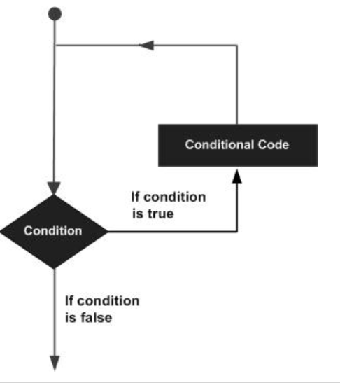

有的时候，可能需要多次执行同一块代码。一般情况下，语句是顺序执行的：函数中的第一个语句先执行，接着是第二个语句，依此类推。
编程语言提供了允许更为复杂的执行路径的多种控制结构。
循环语句允许我们多次执行一个语句或语句组，下面是大多数编程语言中循环语句的一般形式：
C# 提供了以下几种循环类型。
循环类型 描述
while 循环 当给定条件为真时，重复语句或语句组。它会在执行循环主体之前测试条件。
for/foreach 循环 多次执行一个语句序列，简化管理循环变量的代码。
do...while 循环 除了它是在循环主体结尾测试条件外，其他与 while 语句类似。
嵌套循环 您可以在 while、for 或 do..while 循环内使用一个或多个循环。
循环控制语句更改执行的正常序列。当执行离开一个范围时，所有在该范围中创建的自动对象都会被销毁。
C# 提供了下列的控制语句。
控制语句 描述
break语句 终止loop或switch语句，程序流将继续执行紧接着loop或switch的下一条语句。
continue语句 跳过本轮循环，开始下一轮循环。
如果条件永远不为假，则循环将变成无限循环。for 循环在传统意义上可用于实现无限循环。由于构成循环的三个表达式中任何一个都不是必需的，您可以将某些条件表达式留空来构成一个无限循环。